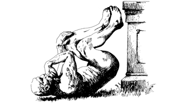

標題的意義
之所以取這個標題，有稍微在 記錄我每週的所見所聞 提到過：
搞笑諾貝爾獎官方說，會這樣定的原因是因為他們認為「每一年都是一個新的開始」。 -《那些關於搞笑諾貝爾獎的二三事》

取自 搞笑諾貝爾獎官網
弟弟看過幾篇每週分享，他的評語是「太雜了」。聽到這個評語，我的第一個情緒是高興，因為我至少在某種程度上達到了廣納各方新知個目的。「雜」就是我對我的《每週分享》的期許，所以我希望我自己能把每一篇都當成是第一篇，而不被自己的專業或是時空侷限。
無以為繼
以前有寫一陣子部落格，後來就不知不覺地荒廢了。
很久以前看過《我為什麼鼓勵工程師寫 blog》，也很想要跟著做，但每次耗時費力地寫完一篇文章之後，卻成效不彰。即使不是靠流量吃飯的部落客，要自己一個人堅持下去，等自己的文章被人發現，還是一件非常難熬的事。
這麼痛苦又沒有什麼回饋的事，傻傻地做下去有什麼意義呢？
最少一位讀者
來到現在服務的公司之後，同事跟我都有在追蹤阮一峰的部落格，從 2018 年開始，每週五他都會固定分享《每週分享》，內容五花八門，目的是在網路世界留下他的足跡與想法，以另一種形式在網路永生。
2018 年底，同事第一次主動向我提出一起寫《每週分享》的想法，或許是我那時的語氣給他沒有很重視這件事的感覺，又或者他自己也還沒有下定決定，這個想法後來也就這麼擱置一旁了。
2018 年 12 月 14 日，同事再次提出了一起寫《每週分享》的想法，或許是我這次的語氣感覺比較重視這件事，又或是他自己做好準備了，我們就此開始了屬於我們自己的《每週分享》。
一開始也是寫的提心吊膽，總覺得這一篇寫完，會不會就沒有下一篇了？所以我們一開始沒有特定為文章建立一個 publication，也沒有規劃什麼行銷方案，盡可能讓自己的得失心不要這麼重，集中精神構思每一期的每週分享。
從第一期開始，我和同事就說好要當彼此的審稿人。由於我們在工作上正在在同一項專案中合作，負責 review 彼此的 code，所以我已經跨過自己的作品被他 review 的那道心理障礙了。反倒是每次發草稿連結給他時都會有一點小興奮，因為知道自己的作品在這個世界上起碼有一個人會認真看過，即使這篇文章之後都不會再有人看，也死而無憾了。
伊卡洛斯的翅膀
雖然還「年輕」，但我自己已經知道，自己永遠也不可能成為自己心目中的一流的工程師。說我是妄自菲薄也好，但我認為努力就可以成功那是講給小孩子聽的童話，長大之後認清了現實，也不會覺得這個認知有多麼殘酷。
即使軟體吃掉世界 Software is eating the world 這句話如雷貫耳，但我在信仰上還是相信，這個世界上有單靠軟體無法深入的領域存在。做為一個還算合格的工程師，我希望我能去尋找、發掘出那些領域；即使那個領域不需要軟體幫助，至少我知道自己探索過了。
所以每週分享，也算是我職涯規劃中的一次嘗試，是伊卡洛斯逃離高塔的翅膀。藉著定期寫文章，不斷提醒自己跳脫工程師的象牙塔，因為這個世界還有很多新知與機會可以嘗試。